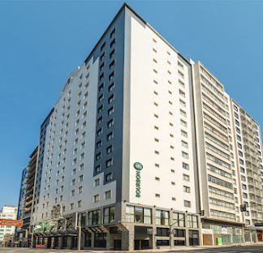

Bourbon Hotel & Suítes Curitiba
Localizado no centro de Curitiba, o Bourbon Hotel & Suítes oferece conforto, excelente localização e estrutura completa. O hotel conta com restaurantes, piscina climatizada, academia e espaços para eventos.
Saiba mais